01 / 선택 없이 자동으로
처음에는 최근 72시간 INBOX, 이후에는 새 메일을 30초마다 확인합니다. 테스트 라벨이 없어도 처리합니다.
최근 72시간 받은편지함부터 시작하는 자동 분류·회신 초안. 실습 누적 API 예산 $1과 블랙톤 화면을 위한 수정 설계입니다.
변경 전 제안 기록 — 블랙톤·누적 $1 예산은 취소됐습니다. 기존 화이트톤의 자동 Gmail 구현은 docs/18-automatic-gmail-review.md가 최신 기준입니다.
처음에는 최근 72시간 INBOX, 이후에는 새 메일을 30초마다 확인합니다. 테스트 라벨이 없어도 처리합니다.
광고 규칙 0회 → AI 분류 1회 → 회신 필요 시 초안·독립 검토 각 1회. 모호·위험은 사람에게 넘깁니다.
새 실습 캠페인 $1 중 $0.80까지만 사전 예약합니다. $0.20은 여유로 두고 응답 유실은 예약을 유지합니다.
메일 작업실·실행 감독·LLMOps 판단실과 모든 상세 화면을 같은 색과 상태 체계로 바꿉니다.
사용자가 메일을 고르는 단계가 없습니다. CODE는 프로그램 로직, AI는 유료 모델 호출, HUMAN은 사람의 검토입니다. Supervisor Controller가 위임·순서·권한·예산을 감독합니다.

분류뿐 아니라 Draft·Critic·Eval·Diagnose와 미래 확장팀도 같은 원장을 사용합니다. 재시작이나 날짜 변경으로 예산이 초기화되지 않습니다.

$1은 이 앱의 새 캠페인 호출 통제 기준입니다. 다른 앱의 API 사용, 세금·환율, LangSmith 유료 요금까지 포함한 계정 전체 청구액 보장은 아닙니다. 이번 설계 작성에서는 유료 호출을 하지 않았습니다.
실행 상세는 암호화된 로컬 원장에, 허용된 metadata·usage·점수는 LangSmith에 연결합니다. 작은 실습 표본을 운영 배포 준비 완료로 표시하지 않습니다.

배경은 깊은 검정 계열, 작업면은 짙은 회색, 본문은 밝은 회색으로 구분합니다. 색만으로 상태를 알리지 않고 문구와 아이콘을 함께 사용합니다. 아래는 색 방향이며 화면 목업은 승인 후 제작합니다.
#0B0F14#111827#1B2533#8AB4FF#6ED6A1#F4C76B| 화면 | 결정에 필요한 상세 |
|---|---|
| 메일 작업실 | 실제 목록 → 분류 근거 → 실행 단계 → 초안·Critic → 수정·검토 이력 |
| 실행 감독 | 실제 노드/엣지·task·공개 memory·입출력·checkpoint·예산 예약 |
| LLMOps 판단실 | 평가 실패 사례·토큰/지연/비용·진단 근거·release gate·전송 대사 |